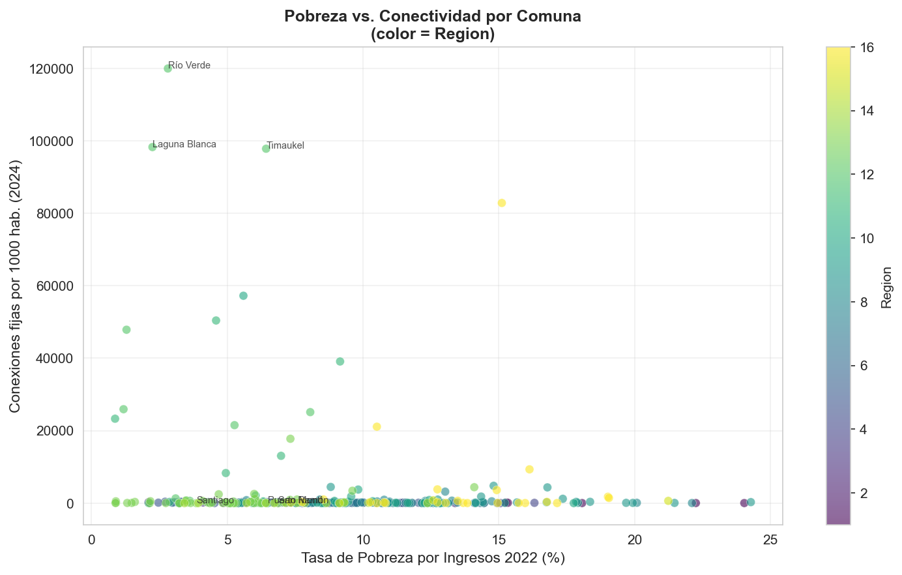
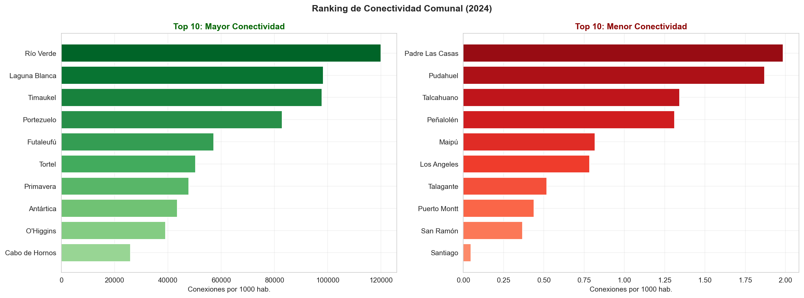
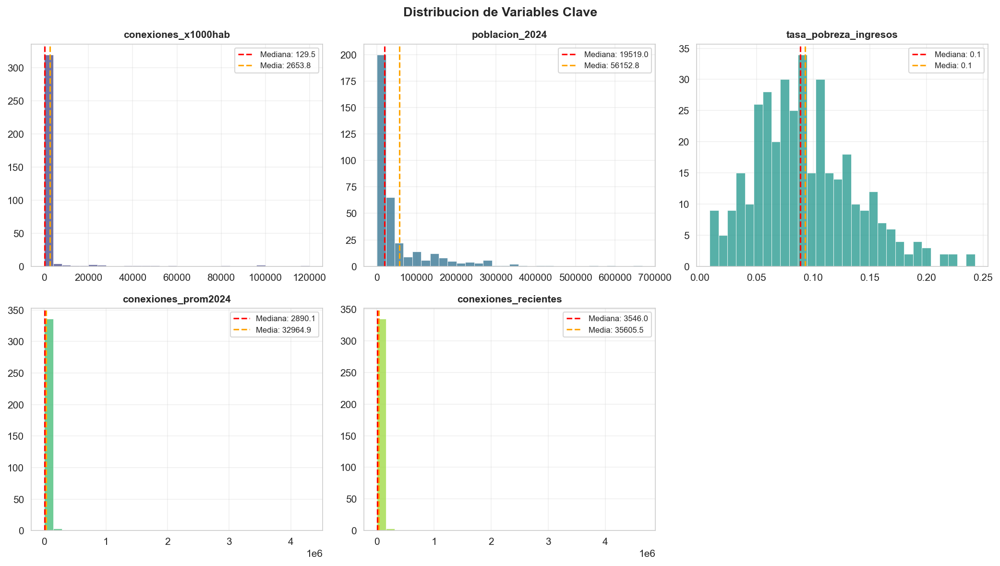
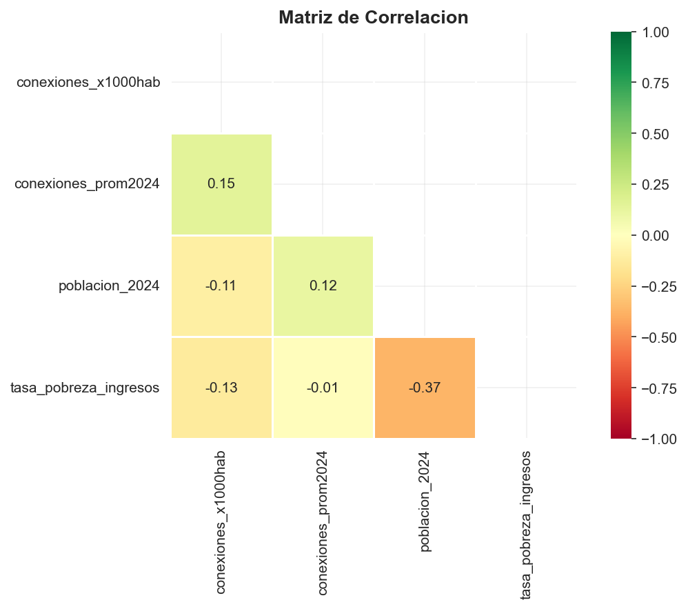
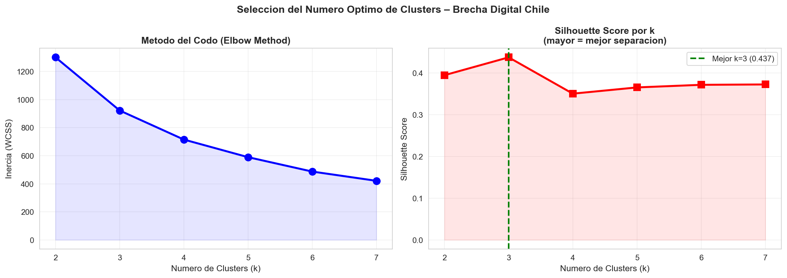
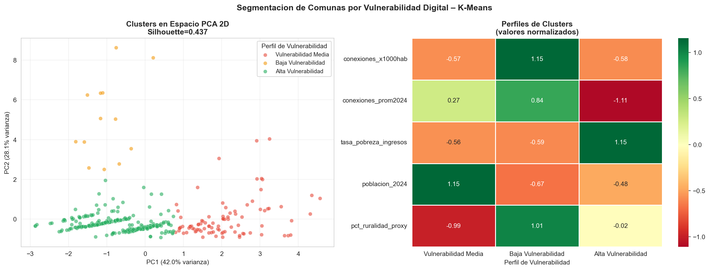
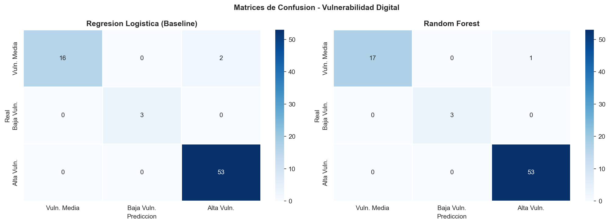
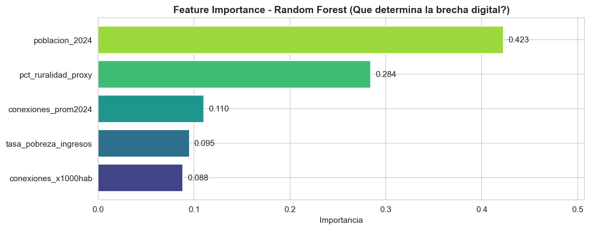

Análisis de conectividad comunal mediante datos oficiales de SUBTEL, INE y CASEN 2022 — Segmentación con K-Means y clasificación con Random Forest.
Chile es el país más conectado de América Latina a nivel agregado, pero con desigualdades extremas entre comunas urbanas y rurales. La conectividad a internet se ha vuelto un bien esencial para educación, salud, trabajo y participación ciudadana.
Las conexiones fijas por cada 1.000 hab. varían más de 100 veces entre la comuna más y menos conectada de Chile.
El 40% de las comunas de Chile son predominantemente rurales (proxy <15.000 hab.) y tienen acceso radicalmente menor.
Las comunas con mayor tasa de pobreza por ingresos (CASEN 2022) tienden a tener significativamente menor conectividad —relación validada estadísticamente.
Segmentar comunas en perfiles de vulnerabilidad digital y construir un modelo predictivo para identificar factores clave de la brecha.
Pese a ocupar el 1er lugar en LATAM en acceso a internet fijo, existen regiones con tasas similares a países en vías de desarrollo dentro del mismo país.
SUBTEL gestiona el Fondo de Desarrollo de las Telecomunicaciones (FDT) para reducir la brecha, pero se requiere análisis de datos para priorizar inversiones.
Definición de la brecha digital como problema de inequidad de acceso. Hipótesis: pobreza y ruralidad son predictores clave.
Exploración de SUBTEL (2015–2026), INE (proyecciones 2024) y CASEN (pobreza 2022). 367 comunas × 13 variables.
Limpieza, merge por CUT comunal, imputación por mediana, winsorización p1–p99, normalización StandardScaler/MinMax.
Clustering: K-Means con selección de k por Elbow + Silhouette.
Clasificación: Regresión Logística + Random Forest con 5-Fold CV.
Métricas: Silhouette Score (clustering), Accuracy / F1 ponderado (clasificación). Cross-validation estratificado.
Dashboard interactivo con Folium/Streamlit, optimización de hiperparámetros, SHAP values, actualización automática.
Primero descubrimos perfiles naturales sin etiquetas (K-Means), y luego usamos esas etiquetas para entrenar clasificadores que revelan qué factores determinan la vulnerabilidad digital.
Subsecretaría de Telecomunicaciones. Series históricas de conexiones fijas residenciales por comuna y región (2015–Jun 2026).
Instituto Nacional de Estadísticas. Proyecciones de población 2024 por Código Único Territorial (CUT) comunal — base Censo 2017.
Min. de Desarrollo Social. Estimaciones SAE de pobreza por ingresos y pobreza multidimensional por comuna (Fay-Herriot).
Unión por Código CUT + normalización de nombres de comunas. Clave compartida por los tres organismos.




La distribución de conexiones/1000 hab. es fuertemente asimétrica: mediana=130 pero media=2.654, indicando unos pocos outliers con conexión masiva.
La correlación negativa confirma la Hipótesis H2: las comunas más pobres tienden a tener menos acceso a internet fijo.
Alta correlación entre pobreza por ingresos y multidimensional, lo que indica que la exclusión digital es parte de una exclusión más amplia.


comunas rurales y semi-rurales con baja conectividad y alta pobreza. Constituyen el 71.7% del total.
Prioridad de intervencióncomunas urbanas medianas con conectividad moderada. Representan el 24.8% del total.
Monitoreo continuocomunas de menor tamaño con infraestructura de fibra óptica excepcional. Solo el 3.5% del total.
Casos de éxito a replicar
Validación cruzada (5-Fold):
LR: F1 = 0.952 ± 0.022 | RF: F1 = 0.969 ± 0.017
El modelo Random Forest indica que la conectividad misma (conexiones/1000 hab. y promedio 2024) son los predictores dominantes — lo que refleja inercia estructural del sistema.
La tasa de pobreza por ingresos aparece como tercer predictor en importancia, confirmando la relación bidireccional: la pobreza limita el acceso, y sin acceso se perpetúa la pobreza.
El tamaño de la población y el proxy de ruralidad son los factores más controlables por política pública — el FDT de SUBTEL debería priorizar comunas con alta ruralidad y baja conectividad.

71.7% de las comunas (263 de 367) están en perfil de Alta Vulnerabilidad Digital.
Correlación negativa validada entre pobreza e internet: a mayor pobreza, menor acceso.
El Random Forest alcanzó 98.7% de accuracy clasificando perfiles de vulnerabilidad.
La ruralidad y el tamaño poblacional son los factores más accionables para política pública.
Todo el código es reproducible con RANDOM_SEED=42 — datos, figuras y modelos generados automáticamente.